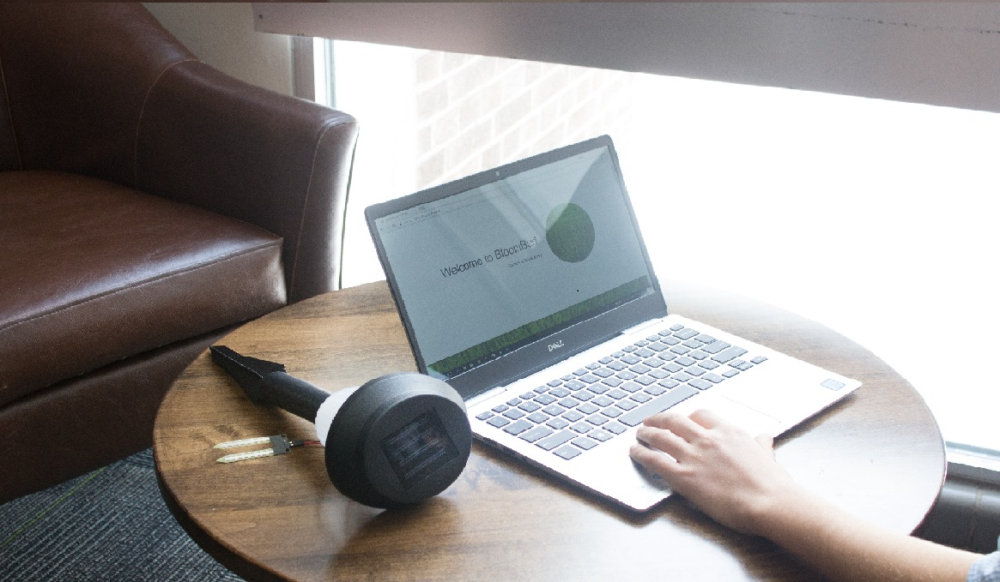

You Should Have:
- BloomBud Device
- BloomBud Credentials Card
- Power Adaptor
Connection Setup
Start by plugging your power adaptor into an outlet.
Grab a device and navigate to the wifi menu.
After locating the BloomBud WiFi network connection, connect to the BloomBud network via the credentials that you recieved in the Box.
After you have connected, open your web browser and navigate to 192.168.4.1 in the URL bar.
Enter your WiFi credentials then hit submit.
All done. Your BloomBud device is now configured with your WiFi. You may now disconnect from the BloomBud WiFi connection.
*If you ever move your BloomBud to another location with a different WiFi connection the steps above should be repeated.